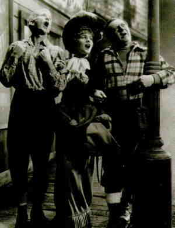

Come and Get It B, B+ US/1936/B&W/Mono/99 minutes/Directed by Howard Hawks and William Wyler/Starring Edward Arnold, Frances Farmer/HBO/23 Chaps/Theatrical Trailer/CLV/$34.95 Edna Ferber’s story of big trees and big passions is
brought to the screen by directors Howard Hawks and William Wyler in a lush, romantic
adaptation of the bell selling novel. Come and Get It is a bittersweet treatment of a
longing for the lost vitality of the past and the reality that we are finally left with
the choices we have to make in life.  Edward Arnold brings to the role of Barney Glasgow enormous zest and charm. Arnold, the archetypical character actor who usually found himself playing the part of the villain, has a grand time in leading man’s clothes. Frances Farmer plays the dual roles of Lotte and her daughter and she is wonderful. Farmer’s sultry voice and sexy swagger capture the audience along with Barney Glasgow. Playing the daughter, she takes a slight edge from her performance and is totally convincing. This is the best of Farmer on view in Come and Get It and her incandescence is a sad reminder of the fate that this rebel suffered in Hollywood. Walter Brennan plays Swan Bostrom, Barney’s best friend and Lotte’s husband on the rebound from Barney. Brennan is wide-eyed and open in an exaggerated fashion, but it is a performance that is easily enjoyed and Brennan was awarded the first of Best Supporting Oscars for this role. The pacing of the film is consistent and does not seem to suffer from having a directoral change mid-stream. Along with two directors, we have two cinematographers, Greg Toland and Rudolph Mate, and they paint a lustrous picture of the pacific northwest. The outdoor scenes, though few, could have been swiped from a documentary of logging country. It’s great to see this 1936 film looking just as good as it did in its youth. Digital processing was used in the transfer to eliminate scratches and dirt and there is little evidence of the soft focus that often plagues transfers on which excessive processing is used. The black and white images are fresh and glossy. The mono sound is relatively clean and clear. Come and Get It is a highly enjoyable disc experience. You could knock me over with a feather if I’m wrong, but isn’t that a still from The Little Foxes that is erroneously pictured on the back of the jacket. |